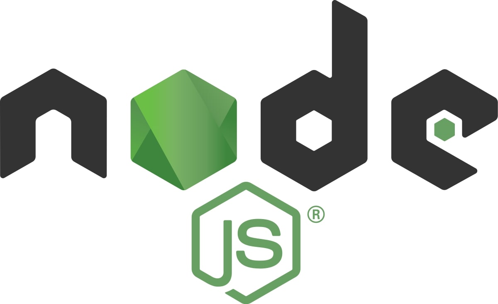
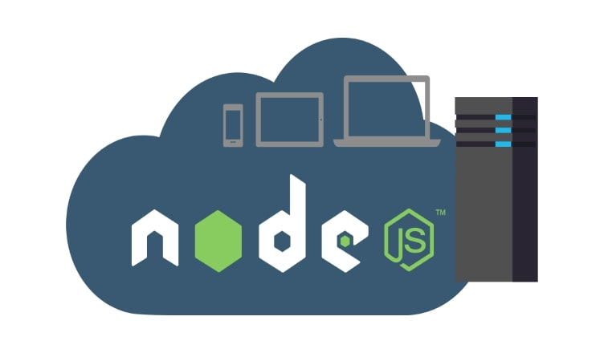

Node.js® es un entorno de ejecución para JavaScript construido con V8, motor de JavaScript de Chrome.
Qué es
Node.js es un entorno en tiempo de ejecución multiplataforma, de código abierto, para la capa del servidor (pero no limitándose a ello) basado en el lenguaje de programación JavaScript, asíncrono, con E/S de datos en una arquitectura orientada a eventos y basado en el motor V8 de Google. Fue creado con el enfoque de ser útil en la creación de programas de red altamente escalables, como por ejemplo, servidores web. Fue creado por Ryan Dahl en 2009 y su evolución está apadrinada por la empresa Joyent, que además tiene contratado a Dahl en plantilla.
Aspectos técnicos
Concurrencia
Node.js funciona con un modelo de evaluación de un único hilo de ejecución, usando entradas y salidas asíncronas las cuales pueden ejecutarse concurrentemente en un número de hasta cientos de miles sin incurrir en costos asociados al cambio de contexto. Este diseño de compartir un único hilo de ejecución entre todas las solicitudes atiende a necesidades de aplicaciones altamente concurrentes, en el que toda operación que realice entradas y salidas debe tener una función callback. Un inconveniente de este enfoque de único hilo de ejecución es que Node.js requiere de módulos adicionales como cluster para escalar la aplicación con el número de núcleos de procesamiento de la máquina en la que se ejecuta.
V8
V8 es el entorno de ejecución para JavaScript creado para Google Chrome. Es software libre desde 2008, está escrito en C++ y compila el código fuente JavaScript en código de máquina en lugar de interpretarlo en tiempo real. Node.js contiene libuv para manejar eventos asíncronos. Libuv es una capa de abstracción de funcionalidades de redes y sistemas de archivo en sistemas Windows y sistemas basados en POSIX como Linux, Mac OS X y Unix. El cuerpo de operaciones de base de Node.js está escrito en JavaScript con métodos de soporte escritos en C++.
Módulos
Node.js incorpora varios "módulos básicos" compilados en el propio binario, como por ejemplo el módulo de red, que proporciona una capa para programación de red asíncrona y otros módulos fundamentales, como por ejemplo Path, FileSystem, Buffer, Timers y el de propósito más general Stream. Es posible utilizar módulos desarrollados por terceros, ya sea como archivos ".node" precompilados, o como archivos en Javascript plano. Los módulos Javascript se implementan siguiendo la especificación CommonJS para módulos, utilizando una variable de exportación para dar a estos scripts acceso a funciones y variables implementadas por los módulos. Los módulos de terceros pueden extender node.js o añadir un nivel de abstracción, implementando varias utilidades middleware para utilizar en aplicaciones web, como por ejemplo los frameworks connect y express. Pese a que los módulos pueden instalarse como archivos simples, normalmente se instalan utilizando el Node Package Manager (npm) que nos facilitará la compilación, instalación y actualización de módulos así como la gestión de las dependencias. Además, los módulos que no se instalen en el directorio por defecto de módulos de Node necesitarán la utilización de una ruta relativa para poder encontrarlos. El wiki Node.js proporciona una lista de varios de los módulos de terceros disponibles.
Desarrollo homogéneo entre cliente y servidor
Node.js puede ser combinado con una base de datos documental (por ejemplo, MongoDB o CouchDB) y bases de datos relacionales como MySQL, PostgreSQL, entre otros, lo que permite desarrollar en un entorno de desarrollo JavaScript unificado. Con la adaptación de los patrones para desarrollo del lado del servidor tales como MVC y sus variantes MVP, MVVM, etc. Node.js facilita la reutilización de código del mismo modelo de interfaz entre el lado del cliente y el lado del servidor.
Bucle de eventos
Node.js se registra con el sistema operativo y cada vez que un cliente establece una conexión se ejecuta un callback. Dentro del entorno de ejecución de Node.js, cada conexión recibe una pequeña asignación de espacio de memoria dinámico, sin tener que crear un hilo de ejecución. A diferencia de otros servidores dirigidos por eventos, el bucle de gestión de eventos de Node.js no es llamado explícitamente sino que se activa al final de cada ejecución de una función callback. El bucle de gestión de eventos se termina cuando ya no quedan eventos por atender.
Multimedia
Aquí dejo la introducción de un tutorial para principantes sobre el framework Node.js que me ha parecido interesante a la par que útil. Para verlo completo, puedes acceder al siguiente enlace al vídeo en la plataforma de Youtube.
También dejo un audio de un podcast llamado "Aprender a programar", concretamente un capítulo dedicado a Nodejs, que en mi opinión tiene un gran valor.